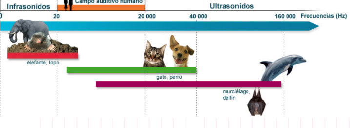
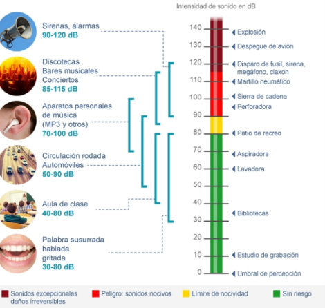
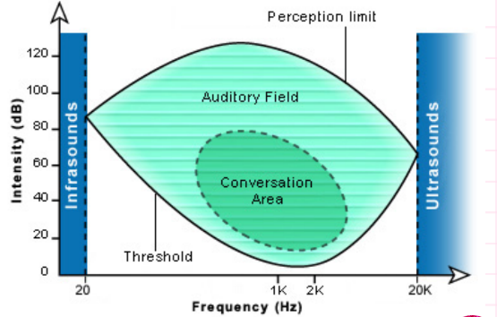

FRECUENCIAS PERCIBIDAS
El oído humano percibe frecuencias entre 20 Hz (tono más bajo) a 20 kHz (tono más alto). Todos los sonidos por debajo de 20 Hz se califican como infrasonidos y todos los sonidos por encima de 20 kHz se califican como ultrasonidos.
Rangos percibidos
- Tonos graves: 16 Hz-256Hz
- Tonos medios: 256Hz - 2kHz
- Tonos agudos: 2kHz - 16 kHz
Rangos percibidos
El oído humano capta los niveles de intensidad acústica comprendidos entre 0dB (umbral) a 120-130 dB.
Curva de audición
El campo auditivo del ser humano está delimitado por el umbral de percepción, el cual hace que nuestra sensibilidad a los decibeles sea diferente en función de las frecuencias.
